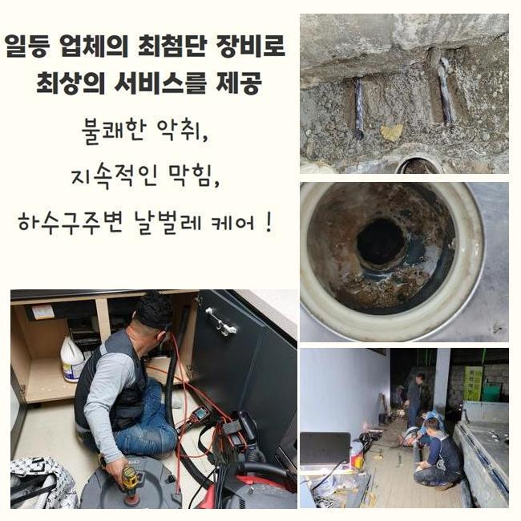
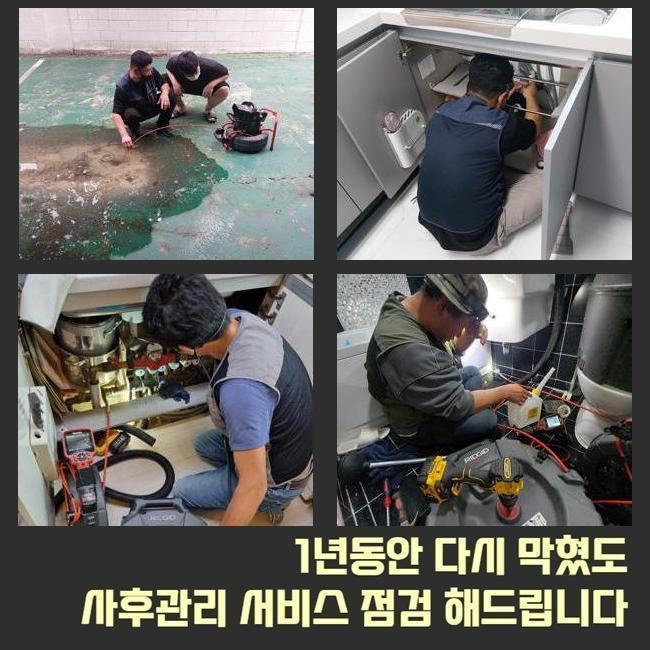
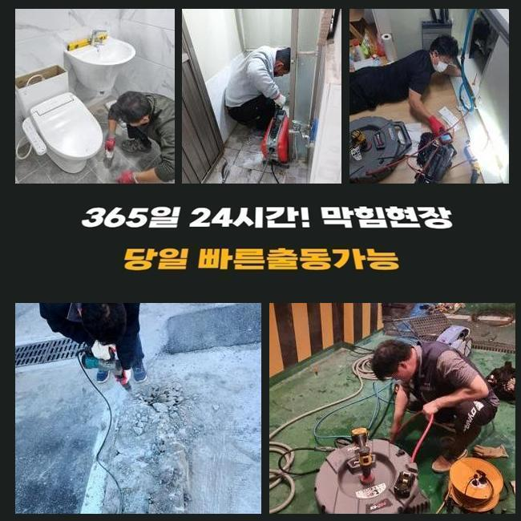
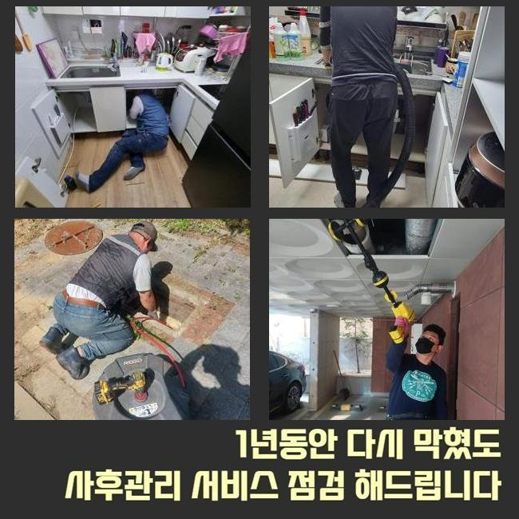
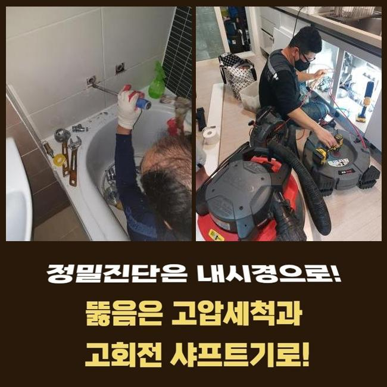
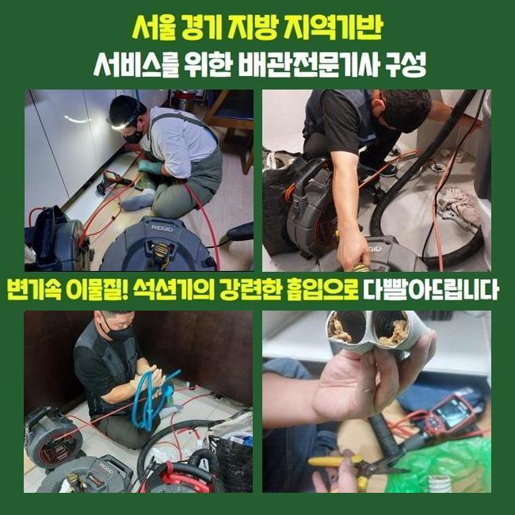
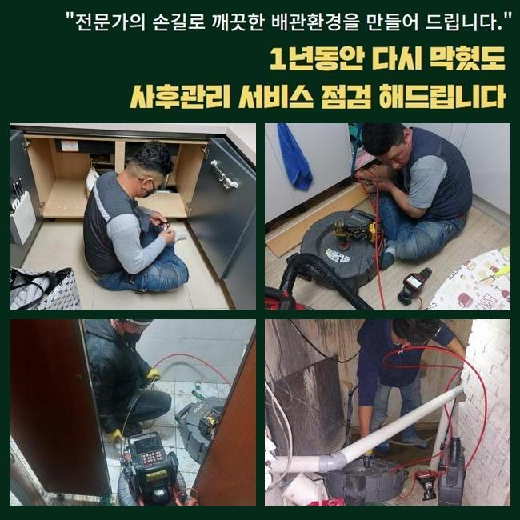

🏠 광진구 구의동욕실바닥막힘 자양동 고압세척비용 배관공사
용인 하수구막힘 전문 시공 후기

📋 작업 개요
- 위치: 용인
- 서비스 유형: 하수구막힘, 배관막힘, 뚫는업체, 배관청소, 고압세척, 설비공사, 배관보수, 악취차단
- 작업 일시: 2024. 12. 2. 18:47
- 업체명: 하수구수사대 (010-5615-2118)
🔍 문제 상황
광진구 구의동욕실바닥막힘 자양동 고압세척비용 배관공사
집의 하수구에서 점차 문제가 생기다가 하수구 고장이 연속된다는 고객님의 전화를 받아서 이러한 상황을 탁월하게 보수를 해주도록 고객님 댁의 문을 두드렸습니다
하수구에 생기는 오류는 생활에 큰 트러블을 만들 수 있다보니 민첩한 동시에 명확하게 고쳐주어야 합니다
시간을 계속 끌다보면 사태가 더 심화될 수 있으니 방심하기보다는 능동적으로 나서는 것이 향상된 결과를 도출합니다
이번에 케어해드린 곳은 공동주택 한 곳에서 배관 속이 가득 막혀버렸고 화장실 안에 달려있는 하수구에서 물이 튀어나오는 증세를 겪은 고객님께서 수선을 도와달라고 하셨습니다
예기치 않게 유발된 물 막힘때문에 어찌할 바를 모르고 뚫는 활동을 해보다가 전문 처치를 요청주신 겁니다
정시에 도착한 이후에 어떤 것이 문제가 된 요소인지 조사에 착수했습니다
화장실의 바닥 부근에서는 물 빠짐이 달성되지 못하고 거꾸로 치솟기까지해서 웅덩이처럼 물이 바닥에 가득 차올라 있었습니다
이 상황이 욕실 쪽에만 특정되는 게 아니고 조금씩 물기가 더해지다가 넓게 확장된 듯 했습니다
바닥과 동시에 세면대 근방에서도 물이 적정하게 흐르지 못해서 바닥까지 축축해지게 됐고 욕실 출입구를 지나서 다른 주방 거실까지 물로 오염이 된겁니다

🔎 원인 분석
💡 전문가 진단: 정밀 진단 장비를 사용하여 슬러지의 고착 여부를 판명하고 타격/세척 작업을 실시했습니다.
화장실의 안쪽에서부터 생긴 하수구 흐름 차단은 물이 범람되게 만들어서 고객님께 엄청난 애로사항을 창출하고 말았습니다
이 문제를 수습해 드릴 수 있게끔 최우선적으로 고려할 점은 분명한 원인을 찾고 구조를 살펴보는 것입니다
이런 막힘은 경미한 수준의 이물질의 침투로 빚어지는 단순막힘도 존재하지만 배관의 배열이라거나 설치의 오류와 같이 여러가지 원인들이 다면적으로 작용하기도 합니다
이런 기초조사를 거쳐보니 해당 빌라는 다수의 배관이 한 곳으로 집결되어 옥외 배관 쪽으로 향하는 시스템임을 알게 됐습니다
이와 유사한 구조들은 통수되는 통로가 차단된다면 흐름 장애가 빈번하게 도래되므로 사전에 조사하여 대비책을 세워야합니다
대부분의 배수관 안에는 기름기나 모발 그리고 여러 폐기물 또한 상당한 양이 모여 있어서 하수가 빠져나가는 과정을 침해하고 있더라고요
오류가 생겨난 정황에 대해 자세하게 안내해 드리고 막힌 쪽을 제거하는 본 작업으로 장애를 해결할 수 있는 로드맵을 계속해서 설명했습니다
우선 화장실의 바닥 위에 차오른 물을 빼내는 업무부터 착수했습니다
물이 모두 사라지고 노출된 배관 내측을 탐색해 보았더니 석회와 기름 덩어리가 대량 밀집해 있는 모습을 곧바로 알 수 있었습니다
유분기 넘치는 기름기와 석회물질은 물의 이동을 가로막기도 하지만 시간이 더 경과될수록 점차 딱딱한 고체가 되어 쉬이 풀리지 않는 막힘을 야기하게 되는 겁니다
그러므로 가벼운 이물의 삭제로는 호전이 되기 힘들기에 스케일링 단계를 수행하면서 꼼꼼하게 살피면서 빠지는 곳 없이 정리해야 재발이 생기지 않습니다

🔧 작업 과정
속시원한 청소를 위해서 여러 환경 속에서 전천후로 쓰이는 샤프트 기계를 도입했습니다
이 샤프트는 체인 노커가 회전하는 힘으로 벽면에 접착된 단단한 결합체들을 효율적으로 제거하게 됩니다
오랫동안 경화되어온 강력한 석회층처럼 관로 벽에서 해체되기 힘든 고체 불순물들을 잘게 파편화 내어서 기존 모습으로 복구하는 데 명확한 이점을 지니고 있습니다
예리한 사슬이 닿으면서 오물을 잘게 썰어주고 거대한 덩어리도 파편화하여 가로막혔던 관로를 시원하게 열어나갔습니다
스케일링을 마친 이후에도 우리는 단단히 잘못된 설비를 척결했는지 보려고 촬영 카메라로 조사를 이어갔습니다
선명하게 비춰주는 배관 내시경은 깊은 배관까지도 선명하게 관찰하도록 지원하는 기기로 관로의 심층부까지도 확인하게 해주니 분명한 상황 평가를 도와줍니다
항상 구비하고 있는 내시경으로 배관의 청소 결과를 검토를 이어가보니 아까 더러웠던 곳과 다르게 무결점으로 깨끗해진 게 보였습니다
곁에 계시던 고객님께도 제시해 드리면서 애로사항이 모조리 수습됨을 보여드렸습니다
어떤 도구를 접목해야 더 맑은 내부로 복원할 수 있을지에 관하여 한참을 생각해 보고 결단을 내리게 됩니다
단일 사용이 아니라 혼합으로 기구를 접목할 때도 있으며 이는 미리 허락을 구합니다
모든 단계가 마무리 되고서 기능상의 개선을 보고자 배수 상황도 확인했습니다
수도를 전체적으로 틀어서 물이 제대로 나가는지 체크해본 바에 따르면 화장실과 주방 종합적으로 처리가 잘 되었고 장애물 없이 맑아진 통로로 하수 처리시설로 흐르는 시원시원한 성능을 보게 됐습니다
문제의 기초적인 원인을 처리해드리고 이어서 설비를 쓰는 평범한 환경으로 즉시 복귀하시도록 현장도 다듬어드리고 있습니다
미처리된 부분은 물청소로 결점없이 치워드리면서 기분좋게 이용하실 수 있게끔 열성적으로 작업했습니다
하수구 기능이 멈추는 일은 불편함이 이만저만이 아닌데 제시간에 고치지 못하면 더욱 악화된 상황까지도 연속되기도 합니다
배관이 부서지거나 다른 세대까지도 손해를 입힐 수 있으니 빠른 수리가 이뤄져야 합니다
하나의 막힘만 해결한다고 전체적인 장애가 해소되는 의미는 아니기 때문에 누락되는 부분없이 철저하게 관리합니다


✅ 작업 완료
하수시설은 건물 운영이 필수인 시설물이니 적극적으로 나서서 배관 청소를 받아야 합니다
건물의 배관이 낡았다면 정기적으로 스캔하면서 들여다 보는 정성이 있어야 문제없이 쓸 수 있습니다
남아있는 오물이 없는지 깊이있게 분석하며 손질을 해드렸기에 향후 발생하는 배수 장애는 나타나지 않을 거예요
추가적인 질문이나 문의도 책임감을 갖고 받고 잘 관리할 수 있는 지침도 안내합니다
하수구에 생기는 여러 문제점들을 속 시원하게 풀어드리겠으니 고충을 안고 계신 분들은 저희 측으로 전화 주세요!




⚠️ 하수구 배관 막힘 예방 및 관리 가이드
- ✅ 머리카락, 비닐, 물티슈 등 물에 분해되지 않는 이물질은 하수구 유입을 절대 금지해 주세요.
- ✅ 하수구 거름망을 씌우고 모여진 이물질은 주기적으로 쓰레기통에 바로 비워주셔야 합니다.
- ✅ 배관 노후가 심할 경우 이물질이 더 쉽게 걸리므로 주기적인 배관 세척(고압세척 등)을 권장합니다.
- ✅ 작업 후 1년 이내 재발 시 하수구수사대에서 무상 A/S 보증 서비스를 제공합니다.
💡 핵심 정리
- 확실한 장비 작업(내시경 점검 및 샤프트 스케일링)으로 원인을 뿌리 뽑습니다.
- 작업 후 1년 이내에 동일한 부위 재발 시 100% 무상 A/S 서비스를 보장합니다.
- 서울 · 경기 · 인천 전 지역에 24시간 언제든 긴급 출동할 수 있도록 항시 대기 중입니다.
❓ 자주 묻는 질문 (FAQ)
🚨 용인 하수구막힘 문제로 고민이신가요?
정확한 원인 진단과 확실한 시공으로 재발 없는 해결을 약속드립니다.
24시간 긴급 출동 | 서울 · 경기 · 인천 전지역 | 1년 내 재발 시 무상 A/S